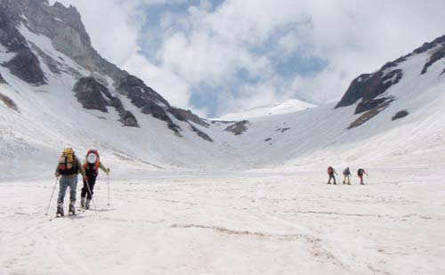
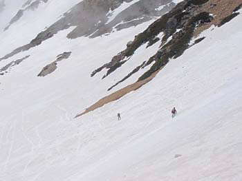

|
|||||||||||||||||||||||||||
|
|||||||||||||||||||||||||||
|
白馬 Two Days Round Trip −清水谷と鑓雪渓を滑る− |
| 実 施 日 | ２００８年５月１７日〜１８日 | |||
| リーダー | 斉藤 俊二 | |||
| 報 告 者 | 野口 いづみ | |||
| 参加者数 | ６名 （会員４名、非会員２名） | |||
| ５月１７日（土） |
| 朝、猿倉の駐車場で東京勢2名、関西勢3名、地元大町の村松さんの6名が集合した。ナオコさんからノルウエイ・フィヨルド・スキーの写真をみせてもらう。今までの海外ツアーの中で最高で今年のハイライトとのこと。隣の車のお兄さんも写真を覗きに来て、ナオコさんに連絡先をきいていた。 8：17、東京勢と村松さんが先発（標高1230ｍ）。関西勢は到着が3時過ぎだったので、のんびり出発したいということだった。板を担いで、猿倉荘の脇から山道を一登りして、林道を小1時間行く。意外と雪が少ない。9：12、大雪渓の末端に到着（1550m）。雪渓を吹き降ろしてくる風が冷たい。私にとっては2度目の大雪渓だ。シール歩行を開始する。 天候は悪くないが、上のほうは雲がかかっていて、稜線までは見えない（写真１）。高度が上がるにつれ、雪面上に大小の落石が多くなる。場所によっては一面の落石で、こんなに落石が多いところだったかと思う。村松さんによれば、“視界がないと落石が落ちてくるヒューという音だけで方向を判断しなければならない”そうで、“大雪渓ほど恐ろしいところはない”ということだった。時折、雲が上がると稜線まで見渡せた（写真２）。2200mを過ぎると傾斜がきつくなる。クライミングサポート使用時にはクトーの足が短くなってしまう斉藤俊二リーダーと私は板をかつぐいだ。村松さんはクトーをつけ、板で通した。先週末に降雪があったということで、それがふわふわと上に乗って腐っている感じ。スキーヤーはすべて小屋をめざしているのかと思っていたが、大多数が2000〜2200mの小雪渓の末端あたりからスキー滑降して下山していた。雪面上はそれらのトレースやら壷足のステップやらで、一面、ぼこぼこに荒れていれ、滑降にあまり適していそうに見えなかった（写真３）。岩小屋の先の2500mで、先行していた村松さんと合流した（写真４）。上からの風の通り道なのか、とても寒かった。ここから谷筋は右折し、ふたたびシール歩行に適した斜度となるので板をはいた。ここまで視界があったが、谷は雲に覆われていた。まだオープンしていない村営頂上宿舎の脇を通過し、広い尾根を進んだ。 |
| 写真１ 大雪渓１ |
|  |
| 写真２ 大雪渓２ |
| Ａ | ||
| 写真３ 小雪渓 | 写真４ 岩小屋のそばを歩く村松 |
| 15：17、白馬山荘到着（2832ｍ）。村松さんは小屋のスタッフや宿泊者と知り合いらしく、挨拶していた。なんと、村松さんは大町案内人組合所属のガイドという正体だった。嘘かホントか、“スキーはへたなので夏しかガイドをしない”そうだ。16：00前後に斉藤さんと関西勢の４名が到着。部屋はとても寒いので談話室で飲んだり食べたり。リーダー持参のブルーチーズ、切り落とし肉に赤ワインが合う。夕食は18：00から。宿泊客は23，4名だった。関西勢は早々に就寝し、関東・大町勢も20時過ぎには高いびき状態だった。 |
| ５月１８日（日） |
| 6：00前起床。万歳！予想通りの快晴だ。朝食後、4名が山頂（2932m）に行った（写真５）。小屋からちょうど100m。剣は槍ヶ岳のようだ。その脇に白いドーム状の池の平山と仙人山が相対している。毛勝3山も近い。毛勝・猫又を5月に滑ったのは3年前だったか。立山はこの方角ではプレスされてしまい、目立たない。旭岳は眼前で立派（写真６）。朝日岳・雪倉岳の稜線はたおやか（写真７）。山頂から、主稜を覗き込む。もろそうな岩だ（写真８）。遠くに頚城の山々。 斉藤リーダーの考えでは、“清水谷は良さそうだが、見た目だけではわからない。少し雪がゆるんでから降りたい”と言うことだった。山頂往復はちょうど良い時間つぶしになった。関西勢の富永さんはマッキンレー遠征を控えているので冒険は避けたいとのことで、一人で大雪渓を降りるとのこと。 |
| 写真５ 白馬山荘と剣 |
| Ａ | ||
| 写真６ 毛勝猫又旭 | 写真７ 白馬乗鞍朝日 |
| 写真８ 主稜 |
| 7：55、5名で白馬山荘を出発（写真９）。晴れ晴れとした空の下、朝の透明な空気を思い切り吸いこむ。広い尾根を滑降して、清水谷に自然にすべりこむ（写真１０）。背景は白馬、前景は剣・立山。豪華なルートだ（写真１１）。雪は表面が少しだけやわらかくなっているもののクラストしており、カリカリと鳴った。適度に硬い状態（写真１２）。400ｍ位、快適に滑りおりたところで、前方に3，4名のスキーヤーが見えた。そのまま彼らのように降りると雪が切れていて渡渉になりそうなので、そこから左手方向に方向転換しトラバースするように滑ってから、標高15m位の斜面を板を手に持って登った。最初からわかっていれば、登らなくてすむコース取りができただろう。さらに200m位滑りおりて底の小沢を右へ抜けるとボトム、つまり白馬鑓からの尾根の末端だった（写真１３）。8:30着。標高2280mで、小屋から550m降りたことになる。そこには2人パーティーが3組休んでいた。彼らは、上からは見えない岩の影の雪が続いているところを滑ってきたそうで、渡渉はしないですんだとのこと。後続はなく、本日このルートは11名か。 |
| Ａ | ||
| 写真９ 出発前の全員集合 | 写真１０ 清水谷滑降１ |
| 写真１１ 清水谷滑降２ |
| Ａ | ||
| 写真１２ 清水谷３ | 写真１３ 二股 |
| 8：45、板を担いで、白馬鑓へ上り上げる尾根に取り掛かる（写真１４a）。600mの登りだ。晴れていて、暑く、汗がぽたぽた落ちた。最初は雪が多く、壷足。稜線に近づくと風に吹かれ、所々で雪が切れ、石の上を歩いた。稜線に上がると鑓の山頂まで背稜が上下して突き上げていくのが見渡せた（写真１４b）。11:30、最後は再び雪が出てきて、鑓の山頂（2903m）に着いた（写真１５）。白馬がとがって大きい。信州側には雲が薄く立ち上っていて、遠景の展望の透明度が落ちてきた（写真１６）。 |
| 写真１４a 白馬鑓への登り返し |
| Ａ | ||
| 写真１４b 白いピークが白馬鑓 | 写真１５ 白馬鑓山頂にて |
| 写真１６ 白馬鑓にて白馬と杓子 |
| 11：50、板を持って20m位、南に稜線を下った。そこからドロップイン（写真１７）。そのまま下に行くと岩稜の多い斜面に行ってしまうので、少し稜線沿いに右にトラバってから、大斜面の滑降に入った。西側斜面とはまったくちがう雪だ。1週前の雪がふわふわと深く、腐った感じで、大雪渓と同じ。表面だけラッピングされたように薄く凍って光っている。尾根をはさんでこれだけ雪が違うものかと、驚かされた。ただ、トレースが少ない点は大雪渓よりマッチベターで、ルートを好きなように刻めた。雪の状態が不安定なので、一カ所、一人ずつ斜面を横切って滑る箇所もあった（写真１８）。日本ばなれした規模の大斜面が続き、昨年の真砂沢を思い出させた（写真1９）。谷が狭まった喉状のところを通過すると、左手に船をかぶせたような屋根のある小屋が見えて、20人くらいの人が群がっていた。鑓温泉（2100m）だ。入りたいのは山々だが、待つのはいやなので、スキップ（写真２０）。 |
| 写真１７ 白馬雪渓 |
|  | Ａ | |
| 写真１８ ひとりづつ渡る | 写真1９ 鑓雪渓上部にて（斉藤撮影） |
| 写真２０ 鑓温泉 |
| 12:40、杓子沢との出会いまで滑り降りた（写真２１）。1300m位か。いやー、滑り甲斐があることじゃった！杓子沢から降りてきたスキーヤーがいたが、やはり雪は悪かったとのこと。そこから小日向への登り返しが始まり、シール歩行開始（写真２２）。遠くからは急斜面に見えたが、意外と歩きやすい登りだった。振り返れば、今滑ってきた鑓の大雪渓が一望だ（写真２３）。 13:40、小日向のコル（1824m）着（写真２４）。休んでいると、大小のグループの20名位が溜まってきた。鑓温泉で一風呂浴びていた人々か。コルからは背面に杓子沢、前面に金山沢が見えた（写真２５）。 14:07、滑降開始。鑓雪渓を滑ってきた身には、あまりにあっけない（写真２６）。一気に滑って、あとは樹林の中の雪を拾って1400mまで。14:28、板を脱ぐ。そこは夏道だった。林道に出て、14：55、駐車場帰着。大雪渓を滑ってきた富永さんが待っていた。「4時か5時頃になると思っていた」との由。みみずくの湯へ直行。菊嶋さんの経営するペンション暖家に立ち寄って散会。穂高町を、これはと思う蕎麦屋を探しながら走ったが、すでに閉店している店が多く、苦労した。村松さんに、お勧めの蕎麦屋をきいておくのだった。 |
| 写真２１ 白馬鑓雪渓 |
| Ａ | ||
| 写真２２ 小日向のコルへの登り | 写真２３ 白馬鑓雪渓を見る |
| 写真２４ 小日向のコルにて |
| Ａ | ||
| 写真２５ 小日向のコルから金山沢 | 写真２６ 小日向のコルからの下り |